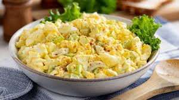

Polish Egg Salad

This Polish egg salad is a traditional recipe that combines hard-boiled eggs, mayonnaise, mustard, and pickles for a creamy and tangy dish. Perfect for sandwiches or as a side dish!
Ingredients
- 1 (8 ounce) package cream cheese, softened
- 1 tablespoon butter, softened, or more to taste
- 4 hard-boiled eggs, chopped
- 1 small onion, chopped
- salt and ground black pepper to taste
- 1 tablespoon chopped fresh parsley, or to taste
Steps
- Combine cream cheese and butter in a bowl and mash with a fork. If mixture is too thick, add more softened butter. Mix in eggs and onion. Season with salt and pepper; serve with parsley.
Home